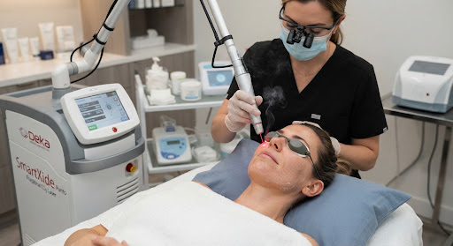

Renove sua pele.
Apague o tempo.
O laser fracionado (CO₂ e Erbium) promove uma renovação profunda e controlada da pele — tratando manchas, cicatrizes, poros dilatados e envelhecimento com precisão e segurança.
O que é o laser
fracionado?
O laser fracionado cria microlesões controladas na pele — microscópicas colunas de tratamento que preservam o tecido ao redor. Isso desencadeia um processo natural de cicatrização que gera colágeno novo, renova as células e melhora a textura da pele de dentro para fora.
Na M&D, trabalhamos com CO₂ fracionado e Erbium Fracionado — modalidades com diferentes profundidades de penetração, escolhidas conforme a queixa principal, o tipo de pele e o tempo de recuperação aceitável pela paciente.

O que o laser fracionado
pode tratar?
Manchas e melasma
Uniformiza o tom da pele, reduzindo manchas senis, solares e o melasma superficial.
Cicatrizes de acne
Suaviza cicatrizes atróficas (deprimidas), punciformes e em "trilho de trem".
Poros dilatados
Reduz o tamanho dos poros e melhora a textura geral da pele.
Envelhecimento e rugas finas
Rejuvenescimento com estímulo de colágeno — suaviza rugas finas e melhora a qualidade geral da pele.
Flacidez leve a moderada
O calor do laser estimula colágeno e eleva levemente o tônus cutâneo — efeito lifting sem cirurgia.
Estrias
Especialmente estrias brancas — melhora a textura, cor e aparência com tratamento seriado.
Do preparo ao resultado:
o que esperar.
Avaliação e escolha da modalidade
Avaliamos o tipo de pele, a queixa principal e o tempo de recuperação disponível. Isso determina a modalidade (CO₂ ou Erbium), a densidade e a profundidade do tratamento.
Anestesia tópica
Aplicamos creme anestésico 40 a 60 minutos antes da sessão para garantir o máximo conforto durante o procedimento.
Aplicação do laser
A sessão dura de 20 a 45 minutos. A sensação é de calor e formigamento. A pele ficará avermelhada ao final — como uma queimadura solar moderada.
Recuperação e resultado
Nos primeiros 3 a 7 dias a pele estará avermelhada e pode descamar levemente. O resultado final — pele renovada, luminosa e uniforme — é observado após 2 a 4 semanas, com melhora progressiva por até 6 meses.
Perguntas frequentes
Depende da intensidade do tratamento. Em tratamentos superficiais (densidade baixa, Erbium): 3 a 4 dias de vermelhidão e leve descamação. Em tratamentos mais intensos (CO₂ alta densidade): até 5 a 7 dias. Em todos os casos, é fundamental evitar sol e seguir o protocolo de cuidados orientado pela especialista.
Peles mais escuras requerem maior cuidado, pois há maior risco de hiperpigmentação (manchas escuras pós-tratamento) com laser ablativo. Para fototipos mais escuros, utilizamos parâmetros mais conservadores e fazemos um preparo de pele prévio. A avaliação individual é essencial para determinar a segurança e a indicação.
Para manchas e rejuvenescimento leve, 1 a 3 sessões com intervalo de 30 a 60 dias podem ser suficientes. Para cicatrizes de acne e estrias, geralmente são necessárias 3 a 6 sessões. O plano é definido na avaliação, considerando sua queixa e o resultado esperado.
Pronta para ter
a melhor pele da sua vida?
Agende sua avaliação gratuita. Nossa especialista analisa sua pele, define a modalidade ideal e apresenta um plano de tratamento realista para sua queixa.
Agendar minha avaliação gratuita